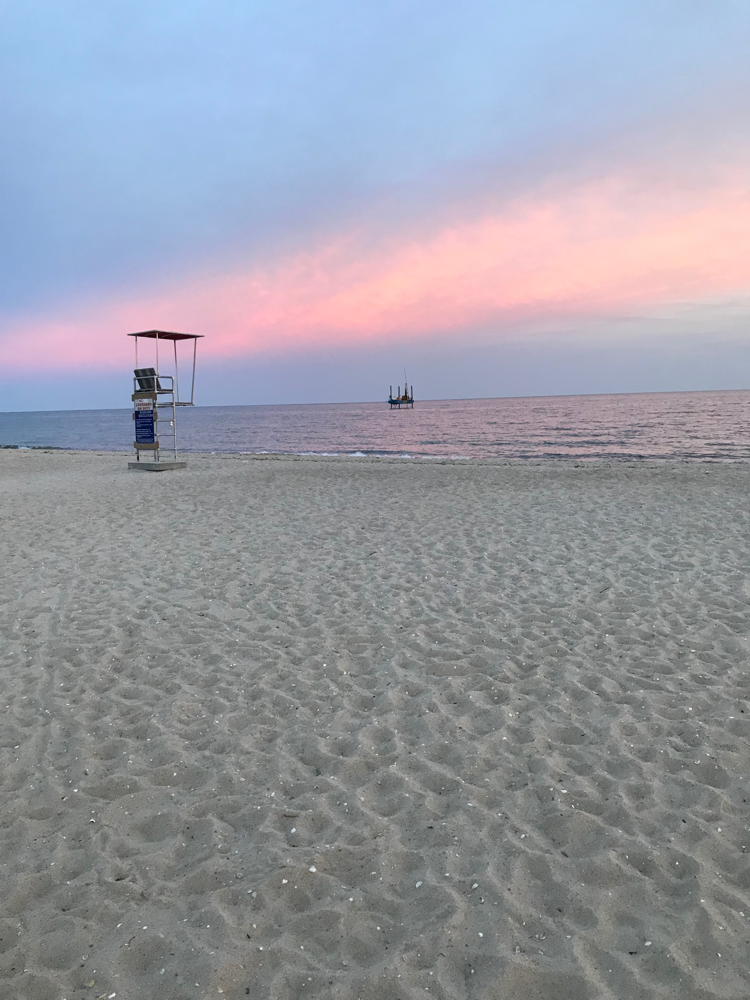
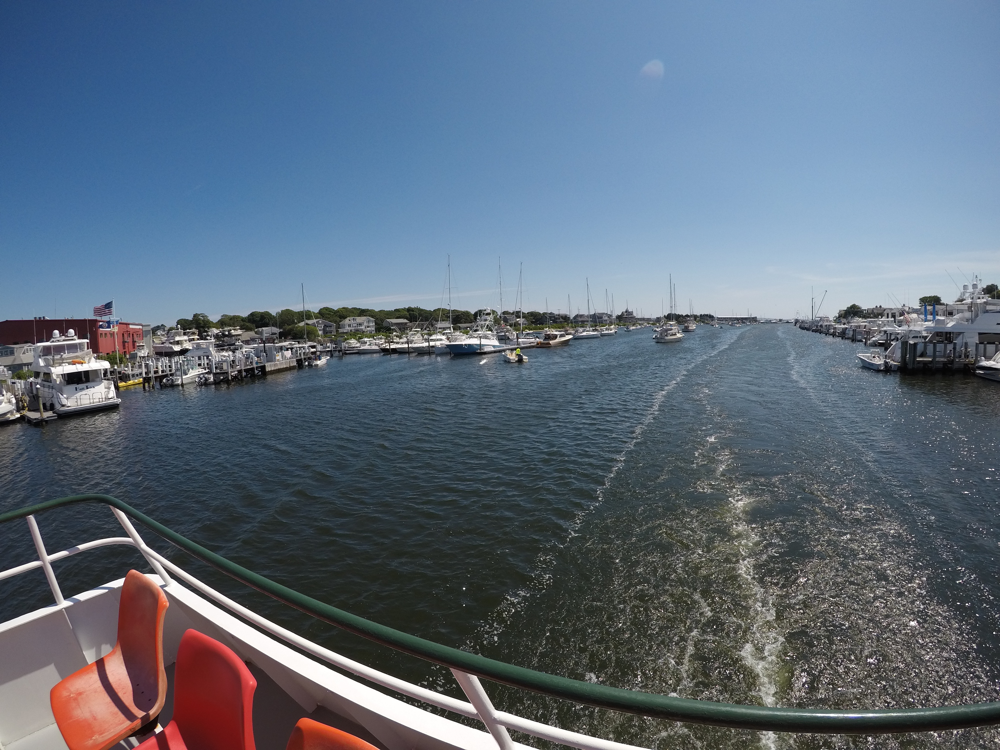
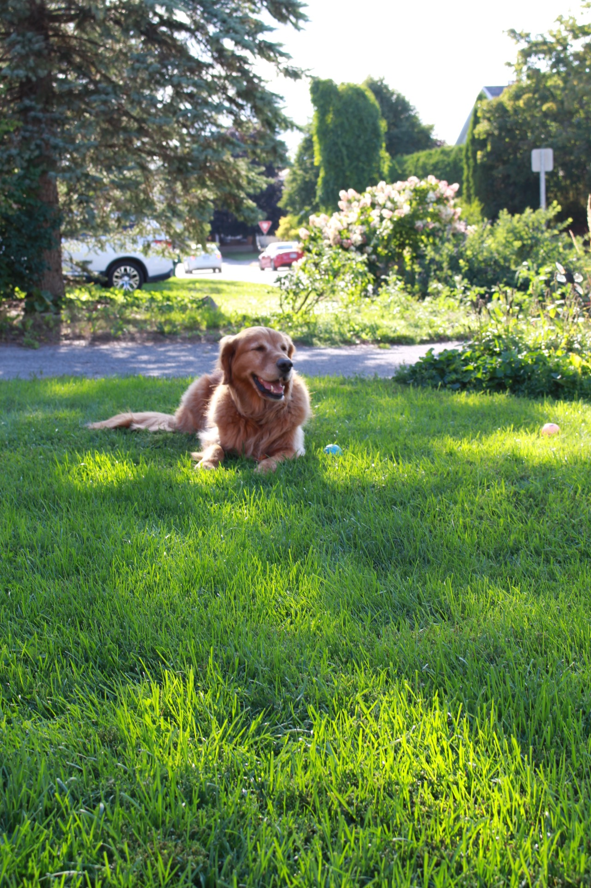
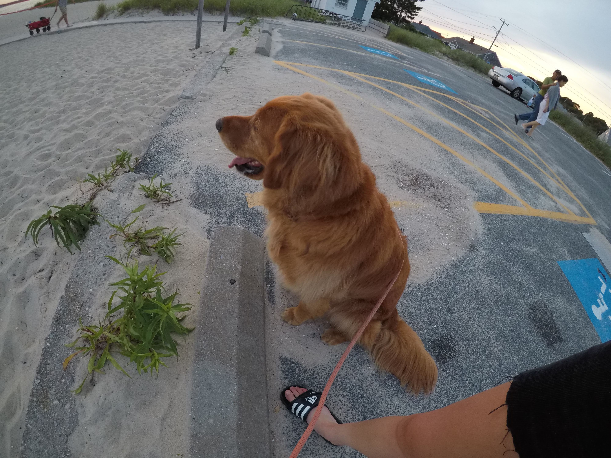

This is Page 3 of my website! I will be exploring two of my 'Favourite' aspects of life and what they look like.
Travel
First I will talk about travelling. I don't think I am alone in saying travelling is one of the best life experiences to be able to take part in. I have been to many parts of the United States, the Caribbean and Eastern Canada. One of my favourite places to travel is Cape Cod, Massachussets. I have been there twice in my life and most recently in 2019. I love the pink sunsets, shark signs (don't go in the water) and the giant ice cream sandwiches at local ice cream parlours. Here are a few links to my favourite places in Cape Cod.
Another amazing part about Cape Cod is Martha's Vineyard. A quaint spot to grab a bite to eat or observe the open water on the boat ride there. But wear your sunscreen or heat stroke might get you on the way back. I learned that the hard way, but hey what are lessons for?
Harley
That's enough about travel, time to get to the highlight of my website and frankly my life. My dog Harley Deacon, yes that is his full name and he likes it that way. He is 8-years-old and loves blueberries, popcorn and a good Chuckit ball. He is my best model for photography and I frequently make him hold his pose for at least 5-10 photos. Golden Retrievers are notorious for their gentle demeanor and hungry bellies. Alright enough of me talking, here he is.
Harley also enjoys running, sleeping during the day and smiling. He is growing old and it has felt like a flash since I was holding him in my arms. Now he is too large and I am not strong enough. Okay, cheesy enough...here is another photo I took of him while we were in Cape Cod. He didn't love the heat but staying home while we leave without him was not an option either.
If you want you to know a little bit more about golden retrievers, I will link a couple websites below to help you decide what puppy you probably want next. Trust me, they are great companions during a thunderstorm and during good and hard times in your life.
Thank you
I hope you have enjoyed a little peak into my life. I appreciate the time you have spent looking through my website and I hope to see yours one day if you choose to get into coding. It is challenging but worth it to see all of the things you can do with a little HTML and a little CSS. Have a great day! Return to the homepage to start all over again.